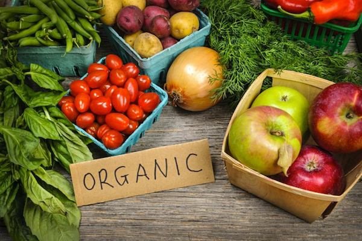

Organic food: why?
Today, many governments are promoting organic or natural farming methods that avoid use of pesticides and other artificial products. The aim is to show that they care about the environment and about people's health.But is this the right approach?
A
Europe is now the biggest market for organic food in the world, expanding by 25 percent a year over the past 10 years. So what is the attraction of organic food for some people? The really important thing is that organic sounds more ‘natural’. Eating organic is a way of defining oneself as natural, good, caring, different from the junk-food-scoffing masses. As one journalist puts it: It feels closer to the source, the beginning, the start of things.' The real desire is to be somehow close to the soil, to Mother Nature.
B
Unlike conventional farming, the organic approach means farming with natural, rather than man-made, fertilisers and pesticides. Techniques such as crop rotation improve soil quality and help organic farmers compensate for the absence of man-made chemicals. As a method of food production, organic is, however, inefficient in its use of labour and land; there are severe limits to how much food can be produced. Also, the environmental benefits of not using artificial fertiliser are tiny compared with the amount of carbon dioxide emitted by transporting food (a great deal of Britain’s organic produce is shipped in from other countries and transported from shop to home by car).
C
Organic farming is often claimed to be safer than conventional farming - for the environment and for consumers. Yet studies into organic farming worldwide continue to reject this claim. An extensive review by the UK Food Standards Agency found that there was no statistically significant difference between organic and conventional crops. Even where results indicated there was evidence of a difference, the reviewers found no sign that these differences would have any noticeable effect on health.
D
The simplistic claim that organic food is more nutritious than conventional food was always likely to be misleading. Food is a natural product, and the health value of different foods will vary for a number of reasons, including freshness, the way the food is cooked, the type of soil it is grown in, the amount of sunlight and rain crops have received, and so on. Likewise, the flavour of a carrot has less to do with whether it was fertilised with manure or something out of a plastic sack than with the variety of carrot and how long ago it was dug up. The differences created by these things are likely to be greater than any differences brought about by using an organic or nonorganic system of production. Indeed, even some ‘organic’ farms are quite different from one another.
E
The notion that organic food is safer than ‘normal’ food is also contradicted by the fact that many of our most common foods are full of natural toxins. Parsnips cause blisters on the skin of agricultural workers. Toasting bread creates carcinogens. As one research expert says: ‘People think that the more natural something is, the better it is for them. That is simply not the case. In fact, it is the opposite that is true: the closer a plant is to its natural state, the more likely it is that it wiil poison you. Naturally, many plants do not want to be eaten, so we have spent 10,000 years developing agriculture and breeding out harmful traits from crops.'
F
Yet educated Europeans are more scared of eating traces of a few, strictly regulated, man-made chemicals than they are of eating the ones that nature created directly. Surrounded by plentiful food, it’s not nature they worry about, but technology. Our obsessions with the ethics and safety of what we eat - concerns about antibiotics in animals, additives in food, GM crops and so on - are symptomatic of a highly technological society that has little faith in its ability to use this technology wisely. In this context, the less something is touched by the human hand, the healthier people assume it must be.
G
Ultimately, the organic farming movement is an expensive luxury for shoppers in well-manicured Europe. For developing parts of the world, it is irrelevant. To European environmentalists, the fact that organic methods require more labour and land than conventional ones to get the same yields is a good thing; to a farmer in rural Africa, it is a disaster. Here, land tends to be so starved and crop yields so low that there simply is not enough organic matter to put back into the soil. Perhaps the focus should be on helping these countries to gain access to the most advanced farming techniques, rather than going back to basics.
Questions 1-6
The reading passage has seven paragraphs, A-G.
Choose the correct heading for paragraphs B-G from the list of headings below.
Example: Paragraph A: viii
1 Paragraph B
2 Paragraph C
3 Paragraph D
4 Paragraph E
5 Paragraph F
6 Paragraph G
List of Headings
i Research into whether organic food is better for us
ii Adding up the cost of organic food
iii The factors that can affect food quality
iv The rich and poor see things differently
v A description of organic farming
vi Testing the taste of organic food
vii Fear of science has created the organic trend
viii The main reason for the popularity of organic food
ix The need to remove hidden dangers from food
Questions 7-8
Choose TWO letters, A-E Questions 7-8
Which TWO of the following points does the writer mention in connection with organic farming?
A the occasional use of pesticides
B using the same field for different crops
C testing soil quality
D reducing the number of farm workers
E the production of greenhouse gases
Questions 9-10
According to the writer, which TWO factors affect the nutritional content of food?
A who prepares the food
B the weather conditions during growth
C where the food has been stored
D when the plants were removed from the earth
E the type of farm the food was grown on
Questions 11-12
Which TWO negative aspects of organic farming does the writer mention?
A Consumers complain about the extra cost.
B Organic food may make people ill.
C Farm workers have to be specially trained.
D It requires too much technological expertise.
E It is not possible in some countries.
---End of the Test---
Please Submit to view your score, solution and explanations.